| Mass Action Reactions | Reference Home |


Basic Form
The canonical form for a mass action reaction in xCellerator is
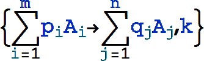where p1,p2,..., q1,q2,..., are numbers (not symbols) representing stoichiometries, and A1,A2,... represent chemical species. It is interpreted as
where the product runs over all the species on the left side of the arrow, and pi and qi are the stoichiometries of Ai on the left-hand side and right-hand sides of the arrow, respectively.
An equivalent textual form for is ShortRightArrow[A, B].
Note: The standard rule arrow (which can be entered as ->) can also be used for this type of arrow, as in A->B.
For example:
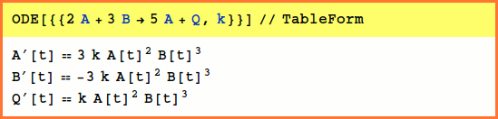The stoichiometries may be any combination of integers, rational, or real numbers. Variable stoichiometries are not supported. Missing rate constants default to 1:
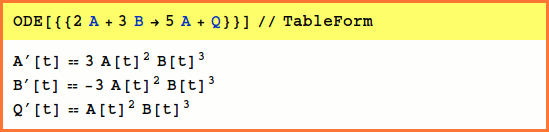
Basic Form, Reversible
The canonical form for a reversible mass action reaction in xCellerator is
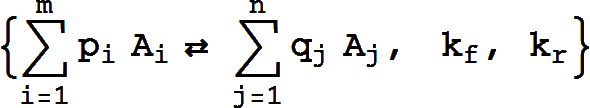It is equivalent to the pair of reactions
Missing rate constants default to 1.
An equivalent textual form for is RightArrowLeftArrow[A, B].
Basic Form, Catalytic
The canonical form for a simple catalytic is
or
which is equivalent to the basic reaction
The essential observation is that the concentration of the catalyst (e.g., C does not change.
For example,
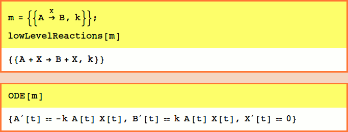There may be multiple reactants and products (but there must be only one catalyst) and stoichiometries may be specified for the reactants and products:

An equivalent textual form for is
Overscript[ShortRightArrow[A, B], C].
Note: Overscripts can be entered at the keyboard by typing [control]-7.
Catalytic, Reactant-Enzyme Complex
The basic catalytic reaction is
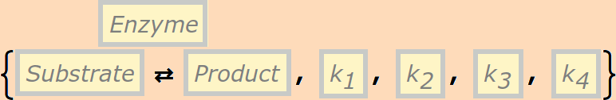or
This represents the biochemical conversion
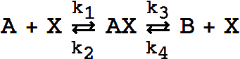 (NOTE: this is NOT Cellerator syntax)
For Example,
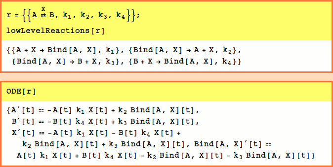
Note that the Bind[A,X] wrappers are automatically generated. This wrapper represents a new variable formed by joining together in a complex the variables listed as its arguments. For more information on this see Bind.
The rate constants are optional and default to k1=k2=k3=1,k4=0
The user is strongly cautioned to resist the temptation to designate the Enyzme by the variable E which represents the base of the natural logarithm in Mathematica.
An equivalent textual form for 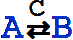 is
Overscript[RightArrowLeftArrow[A, B], C].
Reversible Catalytic, Reactant-Enzyme Complex
The basic template is
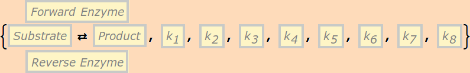or
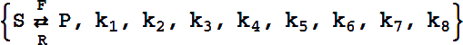
This reaction is equivalent to the pair of reactions:
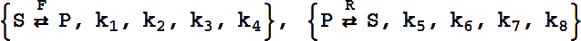It can have either six or eight rate constants.
If eight rate constants are given, they are partitioned into two sets of 4, as shown above.
If six rate constants are given, they are partitioned into two sets of 3, so that
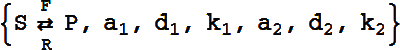
becomes
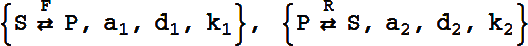
An equivalent textual form for  is
is
Underoverscript[RightArrowLeftArrow[A, B], R, F].
Two Complex Catalytic
The canonical template is:
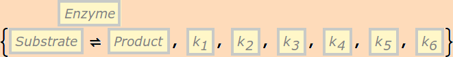or
represents the biochemical process
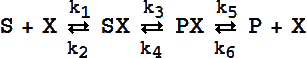 (NOTE: this is NOT Cellerator syntax)
It must have precisely six rate constants.
An equivalent textual form for 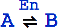 is
Overscript[Equilibrium[A, B], C].
For Example,

Summary of Mass Action Arrow Forms
| Arrow | What it represents |
 |
Mass action |
 |
Mass action with specified stoichiomitries |
 |
 |
 |
 |
 |
 |
![OverscriptUnderscript[A<==>B, ER,EF]](arrows/eq9.gif) |
 |
![OverscriptUnderscript[Equilibrium[A,B], ER,EF]](arrows/eq11.gif) |
 |
 |
 |
 |
 |
 |
 |
 |
 |
 |
 |
 |
 |
 |
 |